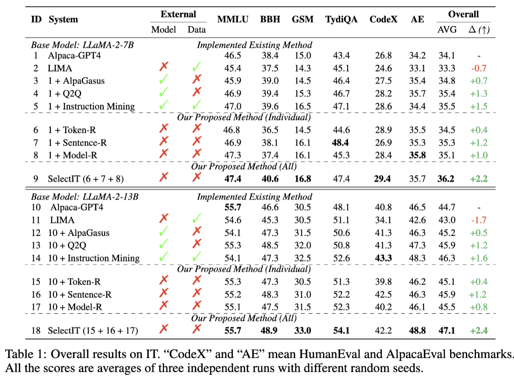

Paper Summary
Note: Images and equations are from the original paper. But I did redraw them for ppt animation effects
Paper Reference
@misc{liu2025selectitselectiveinstructiontuning,
title={SelectIT: Selective Instruction Tuning for LLMs via Uncertainty-Aware Self-Reflection},
author={Liangxin Liu and Xuebo Liu and Derek F. Wong and Dongfang Li and Ziyi Wang and Baotian Hu and Min Zhang},
year={2025},
eprint={2402.16705},
archivePrefix={arXiv},
primaryClass={cs.CL},
url={https://arxiv.org/abs/2402.16705},
}
Abstract
This paper proposes SelectIT, a framework that ranks and selects the top 20% of instruction–response pairs by leveraging the base LLM’s own uncertainty signals—no external evaluators or retraining needed. Experiments on LLaMA-2-13B show consistent gains over vanilla Alpaca tuning across reasoning, coding, and multilingual benchmarks.
This Summary Includes
How they solved it
A three-stage self-reflection pipeline selects the highest-quality examples:
1. Token-Level Reflection

Pick the most probable score token:
\( S^{\mathrm{base}} = \arg\max_{k\in\{1,\dots,K\}} P'_k, \quad P'_k = \frac{P_k}{\sum_{j=1}^K P_j} \) Isn’t \(S^{\mathrm{base}}\) enough?
Since probabilities can be very close, we multiply by an uncertainty term:
\( S_{\mathrm{token}} = S^{\mathrm{base}} \times \underbrace{ \frac{1}{K-1}\sum_{i=1}^K |P'_i - P'_{S^{\mathrm{base}}}| }_{\text{Uncertainty}} \)
2. Sentence-Level Reflection

Average multiple token scores (from varied rating prompts) and penalize high variance:
\( S^{\mathrm{sent}} = \frac{ \frac{1}{K}\sum_{i=1}^K S^{\mathrm{token}}_{i} }{ 1 + \alpha \times \underbrace{\mathrm{Std}\{S^{\mathrm{token}}_{i}\}_{i=1}^K}_{\text{Uncertainty}} } \) → w/ prompt phrasing.
3. Model-Level Reflection
Combine all sentence-level scores into a global ranking:
\( \mathrm{Quality} \propto S^{\mathrm{model}} = \sum_{i=1}^{N}\Bigl( \tfrac{\theta_i}{\sum_{j=1}^{N}\theta_j} \times S^{\mathrm{sent}}_{i} \Bigr) \) → w/ prompt phrasing.
Key Results
SelectIT outperforms vanilla Alpaca tuning and other selection baselines, with strong gains on reasoning (BBH, GSM), coding (HumanEval), and multilingual (TyDiQA) tasks.
